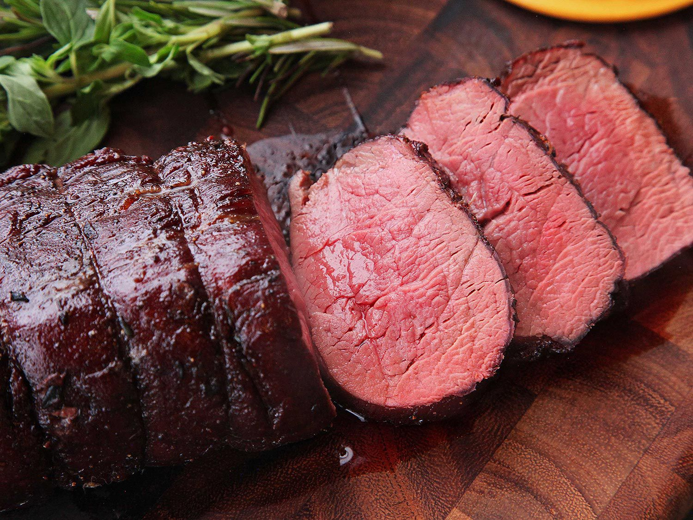

Herbed Beef Tenderloin

Description
Very nice recipe for beef tenderloin
Ingredients
- 1 (3 pound) beef tenderloin
- 2 teaspoons olive oil
- 2 cloves garlic, minced
- 2 teaspoons dried basil
- 1 ½ teaspoons dried rosemary, crushed
- 1 teaspoon sea salt
- fresh ground black pepper to taste
Steps
- Preheat oven to 425 degrees F (220 degrees C).
- Tie tenderloin at 2-inch intervals with kitchen string.
- Combine oil and garlic in a bowl; brush over meat. Mix basil, rosemary, sea salt, and black pepper together in a bowl; sprinkle evenly over the meat.
- Roast beef tenderloin in preheated oven until beginning to firm and is hot and slightly pink in the center, 40 to 50 minutes. An instant-read thermometer inserted into the center should read 140 degrees F (60 degrees C).